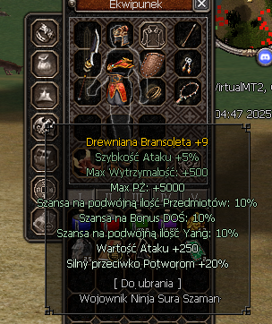
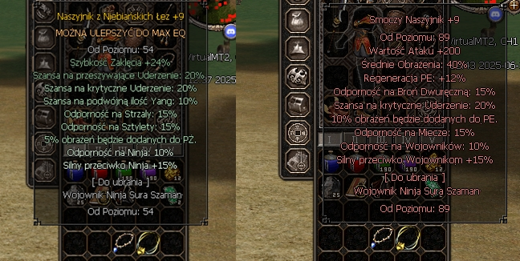
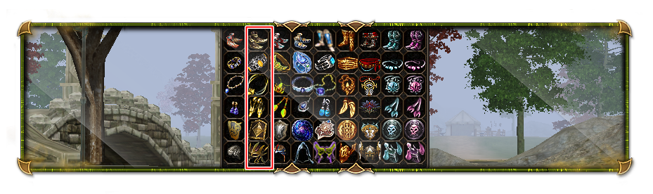
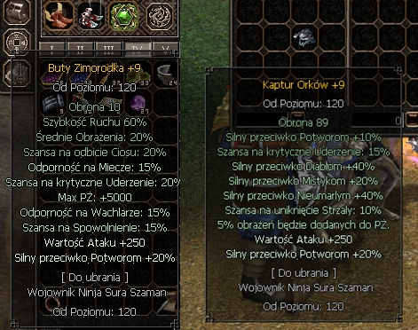

Ekwipunek na VirtualMT2
Każdy gracz na początku swojej rozgrywki otrzymuje pełny ekwipunek przygotowany w taki sposób aby peirwsze kroki nie sprawiały większych problemów.
Wartości bonusów 6/7 są zawsze prawidłowe, warto je zapamiętać ponieważ w ekwipunku PVM pozostaną one takie same już do końca gry.
250 wartość ataku + 20% Silny przeciwko potworom.
Taki ekwipunek bez problemu wystarczy aż do poziomu 90 przy którym dokonacie pierwszych zmian w swoim wyposażeniu.
Pierwszą rzeczą którą należy wymienić w swoim ekwipunku po osiągnięciu poziomu 90
mimo, że sam item jest od poziomu 89lv.
Smoczy naszjnik jest pierwszym przemiotm który znacząco zwiększa wasze możliwości PVM, tym samym bezpośrednio przyspieszającym proces zdobywania przedmiotów a tym samym bryłek złota - serwerowej waluty.
Smoczy naszyjnik tworzymy magicznym metalem ulepszając naszyjnik z niebiańskich łez
przy użyciu niewielkiej ilości pereł oraz Broszur szermierki.
Następnym krokiem może być stworzenie pozsotałej części smoczego ekwipunku.
Należy natomiast pamiętać o tym, że nie jest to konieczne, ponieważ pozostałe smocze itemy nie wnoszą dla nas żadnej większej wartości PVM oraz PVP (z wyjątkiem tarczy PVP)
Zdjęcie poglądowe dla smoczego ekwipunku pozyskane z Forum VirtualMT2, a dokładnie wikipedii serwerowej. Następnym przystankiem na naszej trasie rozwoju postaci jest poziom 120 przy którym zdecydowanie zaleca się pozostanie na jakiś czas. Na poziomie 120 kluczowe staje się zdobycie 2 przedmiotów. Chodzi głownie o Buty Zimorodka +9 (od +0 do +8 są na poziom 130 ale +9 już na 120) które dają nam 60% szybkościruchu i 20% średnich obrażeń. Drugim przedmiotem jest Kaptur orków +9. od +0 do +8 sytuacja wygląda tak samo jak przy butach Zimorodka. Hełm ten ma wbudowany bonus na potwory co na DT oraz "baronce" daje naprawdę dużo.
Jeszcze więcej informacji o ekwipunku...

Jeszcze więcej informacji o ekwipunku...